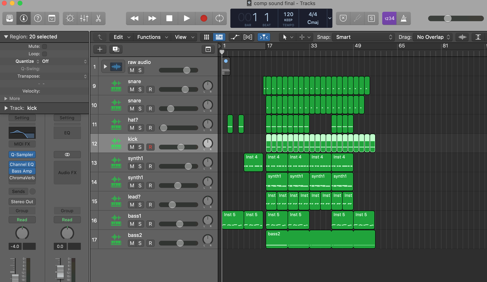
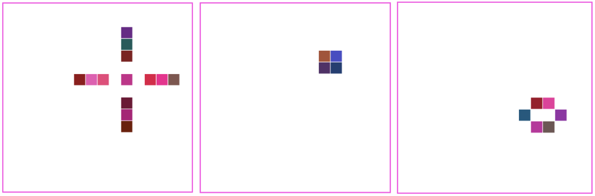
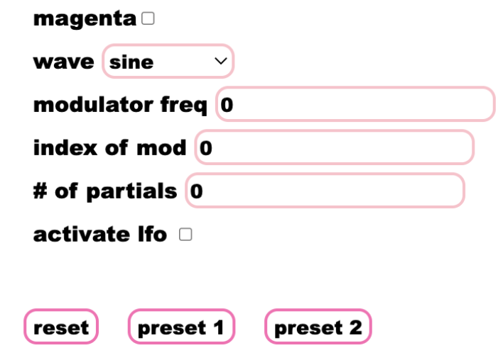
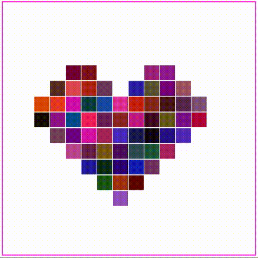

For our final project, we decided to create a song that the listener can play along with. This was accomplished by
first coding sounds in WebAudio and sampling them to be mixed into a song in Logic. The second part was developing
two digital instruments: an interactive cellular automata and a synth which pipes input into Magenta.js to continue
the melody.
In order to make the beat, Sun coded all sounds from scratch in WebAudio. Click here to check them
out! She researched how to create drum sounds,
and took inspiration from online sources. She also used her synth from lab2 for the keyboard sounds. Then, she
recorded the sounds individually using a zoom recording, and then pasted the audio files into Logic Pro X. She used
a sampler in Logic to create the beat, and added effects such as delay and reverb to the sounds. After experimenting
with several ideas, she finally created a beat that she was happy with.

Press “play track” to play the track with a loop. After playing, the button turns into a pause/ play button! Please
note, the pause/ play button works by suspending and running the audio context that the track runs on. We spent a
lot of time researching how to call this using the time out function so that we could fade the gain in or out to
prevent clicking. Unfortunately, we could not find an answer. We decided to keep the pause/ play button despite the
clicking due to its convenience.
Inspiration for the digital instruments and automated composition comes from the pressure of improvising. Making
music can be really hard, especially when it’s on the spot. We wanted to create an instrument that could be played
by the user while giving leeway to allow the program to take over, reducing the anxiety of the improv experience.
Our program works as follows:
The box on the left contains the cellular automata defined by rules from the Game of Life. Simply click within the
box to turn on cells. When you are done, press play to see the cells interact. As they turn on and off, the
frequency of the cell will as well. Need inspiration? Hit random fill to automatically fill the boxes. If the board
dies after you hit play, hit reset to start over. The pause button pauses the cellular automata and can be resumed
with the play button. The reset button clears the board. You can also turn on cells while the animation is on.

Try playing these shapes for inspiration!
The program also has a synth! Use keys on the keyboard to play the synth like a piano. Use the control panel to
apply frequency modulation, additive synthesis, or a low frequency oscillator or change the waveform. Now sure what
sounds good? Click on one of our presets to populate the control panel!

Control panel!
Follow these steps to use the synth with Magenta.js: Check the box next to “magenta.” Play your melody. Uncheck the
box to stop recording. Press shift to play Magenta’s output. It will start to play one second after hitting shift.
video demo
Thank you for reading!

~Lili and Sunny